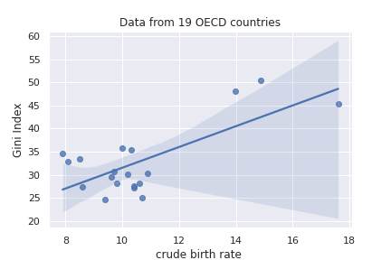

Data Visualisation Portfolio
Skill: Building a site and embedding charts
Skill: Hosting data
I built this using raw data
I built this using an API
Skill: Editing data and writing JSON by hand
This chart is built using raw data, after I added Sweden's observations to the CSV
This chart is built by adding data to the JSON file manually
Skill: Scraping
I created this interactive chart after scraping data from YouGov
Skill: Creating API driven charts
I built this chart using the World Bank API. I converted the XML format of the API to JSON before including it in the chart. Thank you Denes!
I built this chart using the ONS API.
Skill: APIs and Python Loops
The data in this chart was generated by 4 WorldBank APIs. I created the APIs on Google Colab and then downloaded the data as a CSV and manipulated it in Excel
Skill: Listening
After going to the Talking Economics Festival, I spent a good time thinking about when Sarah Smith mentioned that women's mental health suffered more than men's during the pandemic. This chart compares women's anxiety levels to men's, showing us that, on average, women's mental health was indeed doing worse than men's. Interestingly enough, the trend in changes in the GAD-7 score is similar for both genders, which peaked during June of 2020.
Skill: Interactivity
Zoom in!
Skill: Data Analytics
We find an R² of 0.53, indicating a moderate effect size or moderate correlation between crude birth rate(per 1000 people) and the Gini Index(Inequality). The regression equation is y = 2.25 * x + 9.06
